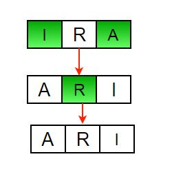

Here n is the size of the array
Steps
1) Initialize start and end indexes as start = 0, end = n-1
2) In a loop, swap arr[start] with arr[end] and change start and end as follows :
start = start +1
end = end – 1
Below is another example
